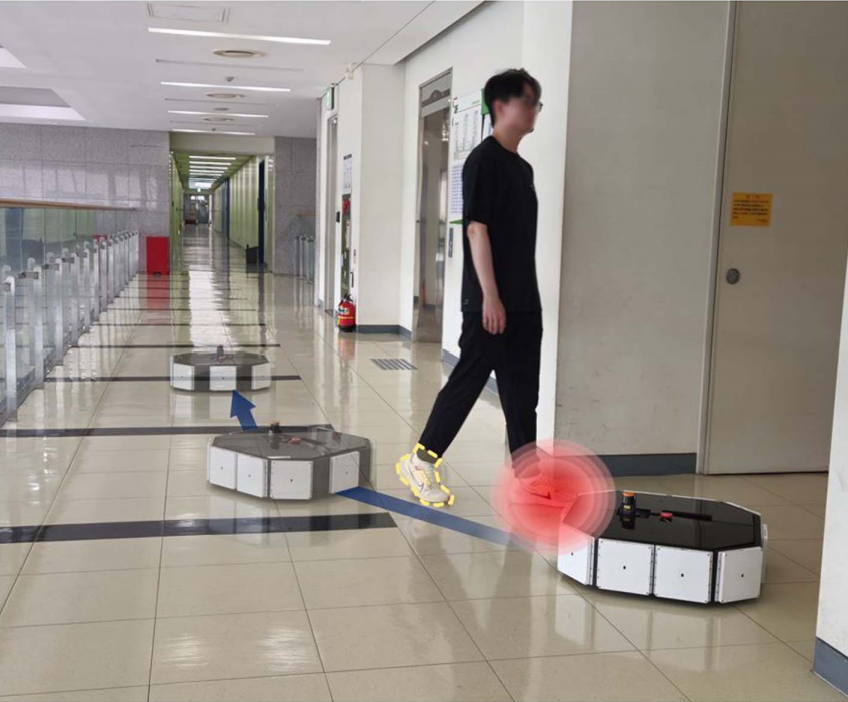
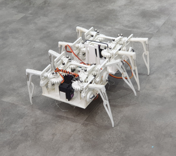

|
Hyun Chang Kang Pleased to have you here! I'm a PhD candidate at Robotics Innovatory, Sungkyunkwan University, South Korea, under the supervision of Prof. Hyouk Ryeol Choi.
My research is mainly focused on adaptive multi-modal sensor fusion |

|
Journal |
|
Safety-Critical Reactive Motion using Constrained Variable Admittance Control with Dual-Type Proximity Sensors
Seung Jae Moon, Hong Sik Yim, Hyun Chang Kang, Jae Yoon Shim, Dawoon Jung, *Hyouk Ryeol Choi IEEE Robotics and Automation Letters (RA-L), July 2025 paper This study proposes a constrained Variable Admittance Control method with proximity-based pre-contact detection to enhance safety and smooth contact handling in collaborative robotics.

Adaptive Measurement Model-Based Fusion of Capacitive Proximity Sensor and LiDAR for Improved Mobile Robot Perception
Hyun Chang Kang, Hong Sik Yim, Hyuk Jae Sung, *Hyouk Ryeol Choi IEEE Robotics and Automation Letters (RA-L), January 2025 paper This study presents an adaptive sensor fusion algorithm that integrates a capacitive proximity sensor and LiDAR using Gaussian synthesis. By linearizing non-Gaussian capacitive data with a first-order Taylor approximation, the method improves distance estimation. Experiments show superior accuracy and efficiency over EKF and AEKF in complex environments.
Electromagnetic Field & ToF Sensor Fusion for
Advanced Perceptual Capability of Robots
Hong Sik Yim, Hyun Chang Kang, Tien Dat Nguyen, *Hyouk Ryeol Choi IEEE Robotics and Automation Letters (RA-L), May 2024 paper This study proposes a triple-mode fusion sensor combining electromagnetic field and infrared ToF sensors for enhanced physical human-robot interaction, enabling long-range ToF sensing, short-range capacitive proximity detection, and inductive tactile sensing with a self-curve fitting algorithm to improve accuracy and robustness.
Multi-functional Safety Sensor Coupling Capacitive and Inductive Measurement for Physical Human–Robot Interaction
Hong Sik Yim, Hyun Chang Kang, Tien Dat Nguyen, *Hyouk Ryeol Choi Sensors and Actuators A: Physical, May 2023 paper This study presents a multi-functional safety sensor that combines capacitive and inductive measurements to enhance physical human-robot interaction (pHRI). The sensor enables proximity detection up to 300 mm and tactile sensing up to 11 N, distinguishing between human bodies and conductive objects for safer collaboration. Experimental validation demonstrates its effectiveness in robotic applications, including emergency stop, collision avoidance, and direct teaching.

Multi-legged Walking Robot Using Complex Linkage Structure
Sang Hyun Im, Dong Hoon Lee, Hyun Chang Kang, *Sang Hyun Kim Journal of the Korean Society of Manufacturing Process Engineers, 2021 paper This study presents a multi-legged walking robot that utilizes a complex linkage mechanism to enhance efficiency while reducing structural complexity and power consumption. A double crank-rocker system enables lateral leg movement, while an improved cam structure controls vertical motion, all driven by just two DC motors. The design's feasibility is validated through simulation and real-world implementation. |
Project |

Development of Indoor Mobile Robot Navigation System
Hyun Chang Kang, Team Members 2022-2023 project page Multi-modal sensor fusion based autonomous navigation system for mobile robots in complex indoor environments. The system integrates LiDAR, Capacitive proximity sensors for robust obstacle detection and path planning. |
Exhibition |
|
Roboworld
Hyun Chang Kang, AIDIN Robotics 2021-2023 exhibition page / AIDIN robotics Roboworld is a premier exhibition showcasing the latest advancements in robotics technology in South Korea. |
|
Feel free to download this website's source code. Inspired by Jon Barron's website. |